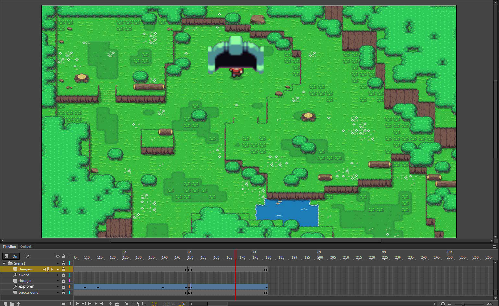
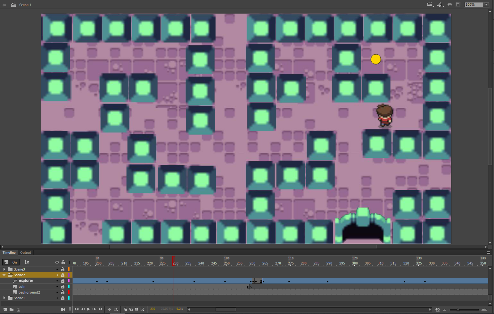
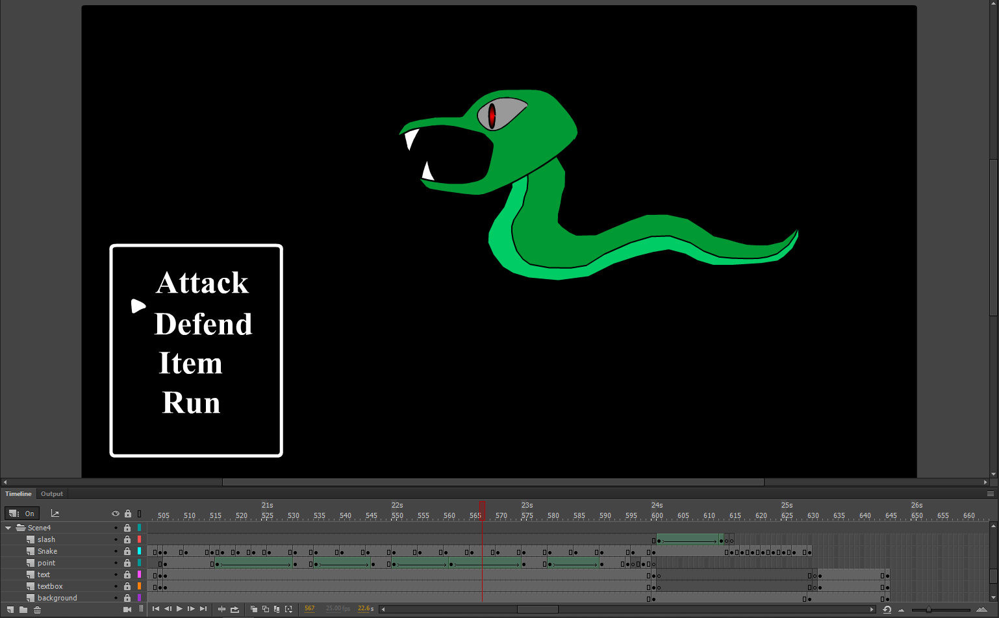
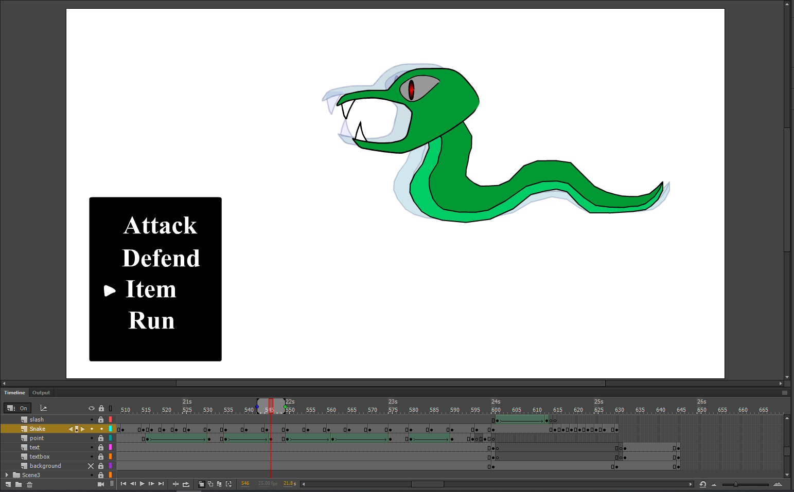
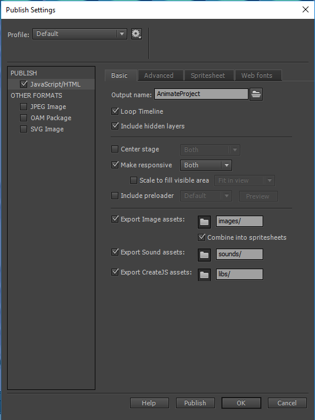
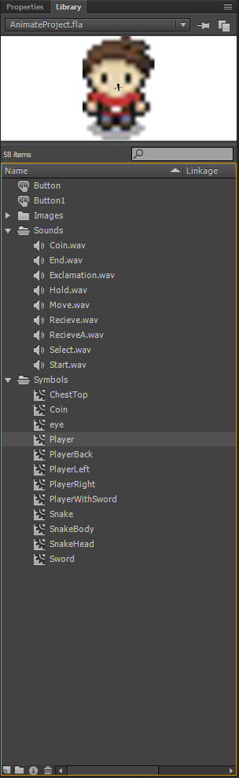
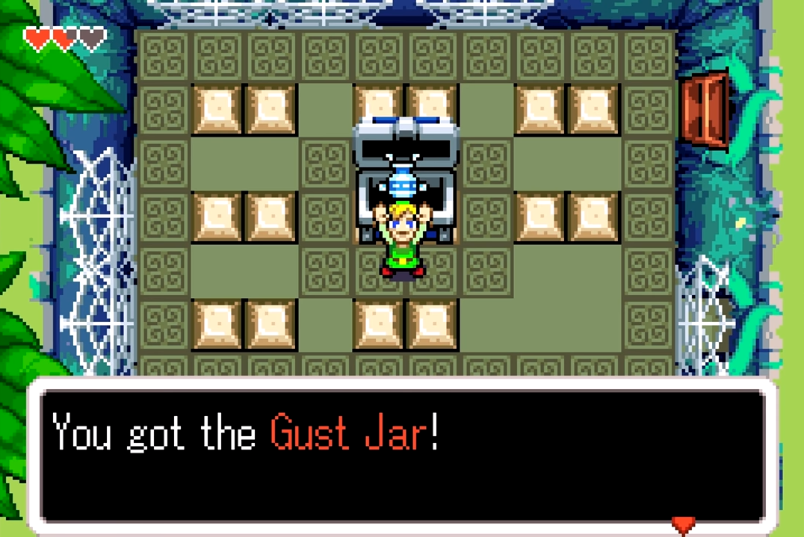
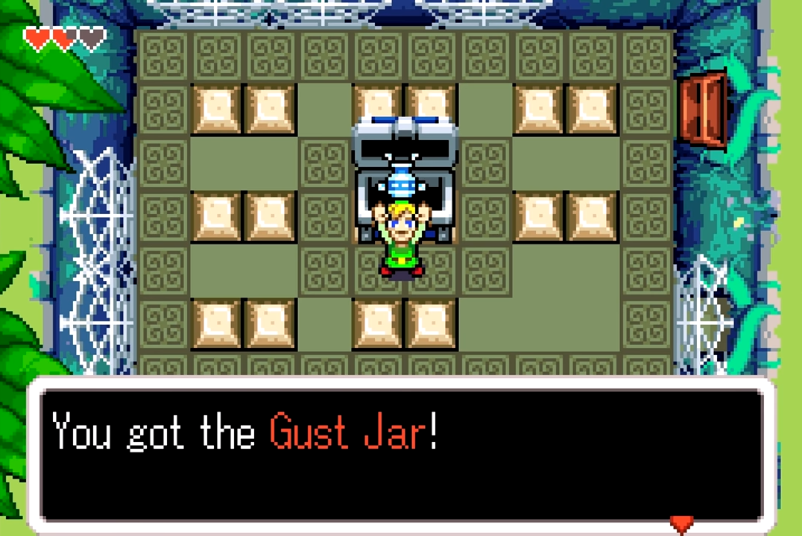

IN614 Multimedia Projects
By Samuel Martin
Animation
-The Animation application I used was Adobe Animate
I used this because it included all of the features I needed for creating an animation
Such as the tweening tools, frame management, layers and Symbols / Shapes.
I also found this program to be easy to use and it has an easy to understand layout.
How you used the features of these tools / applications?
-I used:
The Motion Tween - To move an object around the screen and change direction part way through the animation.
Used for walking so the explorer follows the path and doesn't move though walls.
The Shape Tween - Used for moving and re sizing a vector graphic
The Layers - I used for the placing of objects on the screen. The background would be the lowest layer as it covered the entire screen and anything below it wouldn't be seen.
I used this when the explorer enters the dungeon, where the dungeon is above to give the effect of the explorer entering the dungeon.
Layers Folder - I used for separating the scenes whenever the background and area changes and keep track of objects in each scene.
When I was finished with a scene I condensed the folder and locked the layers within the folder so I couldn't modify them by mistake
Symbols - For images that I used multiple times throughout multiple scenes and so I could keep a copy with the original properties.
I used this on the explorer for moving him around the screen and to the next point.
I placed key frames at every point the explorer turned thus making it look like he is walking on the path. Other wise he would go straight to the end point and look very un-natural.
Shapes - For images I only used in one scene and simple shapes
I used this on images like the cursor during the snake battle scene as it only required a simple motion. (Up and Down)
And the slash where it increases the width and stretches across the screen.
Onion Skin - During the animation of the snake, I wanted it to give the effect that it was moving around.
I used this for seeing the snake on the frame before so I could keep the shape and style of it when I was redrawing it.
Code Snippets - For stopping the video on the last frame.
Making the replay button at the end clickable and go back to the start of the animation.
Why you believe your use of tools / applications was competent
-By using these tools I was able to create an animation similar to how a top down rpg style game would look an function.
Based on the research on various top down games I was able to create the effect of a player controlling a character and going through a dungeon to find a rare item.
The battle scene I used was based off the Dragon Quest series where the is a command window in the bottom left of the screen and a black background.
How you exported your work and why you did it that way
-
-I tried exporting my animation as a .swf file but the animation didn't stop at the end and the replay button didn't work either.
I looked at this page on how to add a .swf to an html file.
https://www.w3schools.com/tags/tag_embed.asp
I then checked the publish settings in Animate
I put a link to the animation on the page instead of directly because it is then easier to see.
I changed the setting 'Make responsive' so the Canvas would become responsive to browser size.
I exported it this way so as a canvas it can function on many browsers and could be interacted with for the replay button.
How you managed assets during project work
-I created some folders in the Adobe Animate Library to separate items based on their purpose
I also gave them names that were easy to identify and so I knew were they were going
For the objects in the animation I sorted them by scene and gave them a folder based on the scene.
-I used these two sprite tilesets for the animation.
https://opengameart.org/content/zelda-like-tilesets-and-sprites
https://opengameart.org/content/top-down-dungeon-tileset
-For sound effects I used bfxr.net to generate some sounds.
https://www.bfxr.net/
Design Decisions:
How you used the elements and principles in your designs.
-
How your designs are consistent with conventions and existing material
-I looked at some existing top down 2d games and how they look and function
I liked the hold up an item animation from the Zelda series so I used it when the explorer recieves the sword from the chest. The sound effect played was also based from here.
 

The sprite for this was included in the sprite set so I wanted to use it and ended up using it there.
What decisions you made about aesthetics and experience
-
Since I used a sprite tileset I was able to create a similar effect to existing games rather than drawing them.